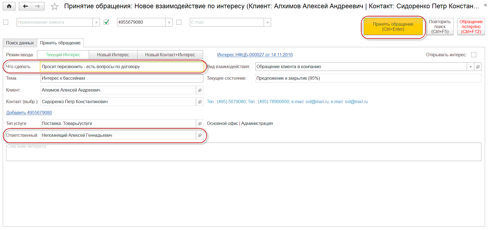

Оператор заходит в свои персональные настройки через раздел «Настройки - Сервис – Персональные настройки пользователя». В отрывшейся форме нужно в группе «Настройки СофтФон» указать значения:
· «Использовать СофтФон» в значение «Да»
· «Действие при входящем звонке» в значение «Регистрация обращения»
В момент звонка отображается информация о звонящем клиенте и его контактном лице, номере телефона. Оператор поднимает трубку телефона, при этом автоматически открывается «Мастер принятия обращения» в котором уже подставлен номер телефона в поле поиска и установлен отбор по найденному клиенту согласно номера телефона. В мастере отображаются активные Интересы по клиенту.

После уточнения темы обращения у клиента, Оператор выбирает:
· один из активных Интересов, при этом в Мастере указывается менеджер ответственный за Интерес
· выбирает создание нового Интереса, при этом в Мастере указывается менеджер, указанный как ответственный за клиента в его карточке
· выбирает создание нового Интереса и указывает конкретного менеджера, в случае просьбы соединить с конкретным менеджером
После определения ответственного менеджера, Оператор пробует выполнить перевод звонка:
 , при этом доступность менеджера на внутреннем номере определяется его состоянием "В сети" (зеленая трубка телефона). В противном случае звонок следует выполнить на сотовый номер с помощью Панели управления.
, при этом доступность менеджера на внутреннем номере определяется его состоянием "В сети" (зеленая трубка телефона). В противном случае звонок следует выполнить на сотовый номер с помощью Панели управления. После подтверждения принятия звонка менеджером, Оператор выбирает команду  подтверждая перевод звонка. При этом закрывается окно регистрации (без регистрации нового взаимодействия).
подтверждая перевод звонка. При этом закрывается окно регистрации (без регистрации нового взаимодействия).
При отсутствии менеджера на рабочем месте или занятости его линии, Оператор:
· регистрирует в поле «Что сделать» ожидание клиента
· отвечает клиенту: «Информация будет передана менеджеру ….. и он в ближайшее время свяжется с Вами»
· кладет трубку телефона (соответствующую команду  ), при этом программа задает вопрос "Принять обращение? ДА, ОТМЕНА". Оператор, отказывается от принятия обращения, заносит другую полезную информацию. В случае согласия - сразу выполняется команда "Принять обращение(Ctrl+Enter)".
), при этом программа задает вопрос "Принять обращение? ДА, ОТМЕНА". Оператор, отказывается от принятия обращения, заносит другую полезную информацию. В случае согласия - сразу выполняется команда "Принять обращение(Ctrl+Enter)".
· Выбирает команду в Мастере принятия обращения

После закрытия Мастера, заполненная информация попадает на рабочее место менеджера и ему высылается уведомление о входящем обращении от клиента.